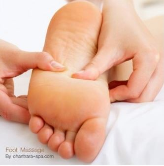
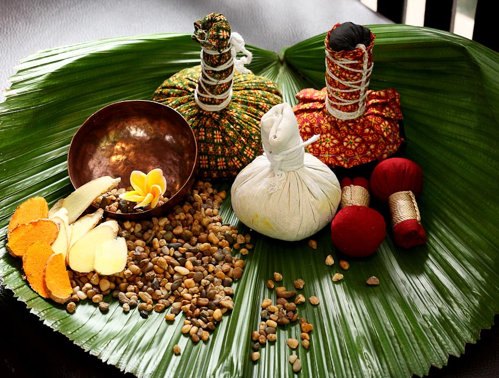

Recent Post
พันธกิจ
Jan 2017- Current
การให้บริการแก่ลูกค้าด้วยมาตรฐานและความปลอดภัย บำบัดรักษาสุขภาพด้วยศาสตร์แพทย์แผนไทยประยุกต์และการดูแลสุขภาพทางเลือก ตามข้อกำหนดของกระทรวงสาธารณสุข อย่างมีคุณธรรมและจริยธรรม ส่งเสริมพัฒนาบุคลากรให้มีมาตรฐานและมีความเชี่ยวชาญในการบริการอันจะนำไปสู่ความเป็นเลิศ
กุญแจแห่งความสำเร็จ
Mar 2012 - Dec 2014
1. ความปลอดภัยและความพึงพอใจในการรับบริการของลูกค้า.
2. Therapist มีความเชี่ยวชาญด้านการนวดและผ่านมาตรฐานของกระทรวงสาธารณสุข.
3. การบริหารจัดการสปาอย่างมืออาชีพ.
4. สถานที่สปามีความปลอดภัยและมีความสวยงามทันสมัย.
Thitirath
Story : Thitirath
Open time : 8.00 to 15.00 pm
Email : yut@kkumail.com
Titlel : 088-329-4354
พันธกิจ
การให้บริการแก่ลูกค้าด้วยมาตรฐานและความปลอดภัย บำบัดรักษาสุขภาพด้วยศาสตร์แพทย์แผนไทยประยุกต์และการดูแลสุขภาพทางเลือก ตามข้อกำหนดของกระทรวงสาธารณสุข อย่างมีคุณธรรมและจริยธรรม ส่งเสริมพัฒนาบุคลากรให้มีมาตรฐานและมีความเชี่ยวชาญในการบริการอันจะนำไปสู่ความเป็นเลิศ
กุญแจแห่งความสำเร็จ
1. ความปลอดภัยและความพึงพอใจในการรับบริการของลูกค้า.
2. Therapist มีความเชี่ยวชาญด้านการนวดและผ่านมาตรฐานของกระทรวงสาธารณสุข.
3. การบริหารจัดการสปาอย่างมืออาชีพ.
4. สถานที่สปามีความปลอดภัยและมีความสวยงามทันสมัย.
“ S P A ”
S (Standard) การให้บริการด้วยมาตรฐานที่ครบถ้วนทุกองค์ประกอบของสปาเพื่อสุขภาพ.
P (People) การให้บริการกลุ่มคนเมืองทุกเพศ ทุกวัย.
A (Accommodation) การให้บริการด้วยสิ่งอำนวยความสะดวกที่ครบครัน เพื่อความสะดวกสบาย.
-
 นวดตัว
นวดตัว
นวด ศรีษะ สะบัก บ่า ไหล่ หลัง -

นวดเท้า
นวด เท้าประคบ ด้วยออย -

คอร์ดสปาพิเศษ
อบตัวด้วยสมุนไพรและมาร์กตัว